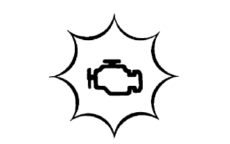
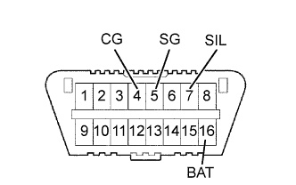

СИСТЕМА ECD > СИСТЕМА ДИАГНОСТИКИ |
| DESCRIPTION |
|  |
| NORMAL MODE AND CHECK MODE |
| 2 TRIP DETECTION LOGIC |
| FREEZE FRAME DATA |
| CHECK DLC3 |
|  |
| Symbol (Terminal No.) | Terminal Description | Condition | Specified Condition |
| SIL (7) - SG (5) | Bus "+" line | During transmission | Pulse generation |
| CG (4) - Body ground | Chassis ground | Always | Below 1 Ω |
| SG (5) - Body ground | Signal ground | Always | Below 1 Ω |
| BAT (16) - Body ground | Battery positive | Always | 11 to 14 V |
| INSPECT BATTERY VOLTAGE |
| CHECK MIL |
The MIL illuminates when the ignition switch is turned to ON and the engine is not running.
When the engine is started, the MIL should turn off. If the lamp remains illuminated, the diagnosis system has detected a malfunction or abnormality in the system.